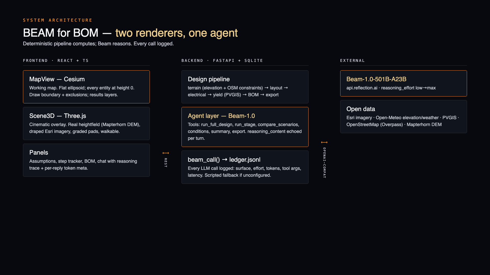
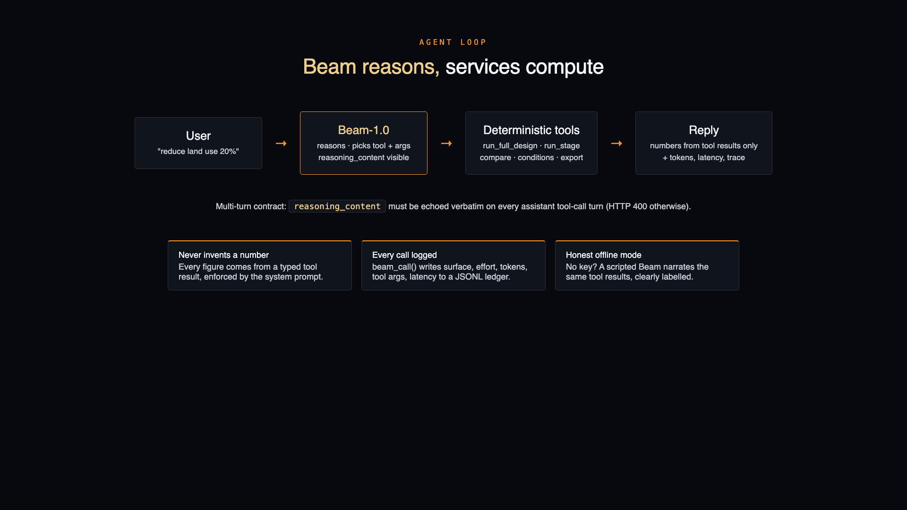
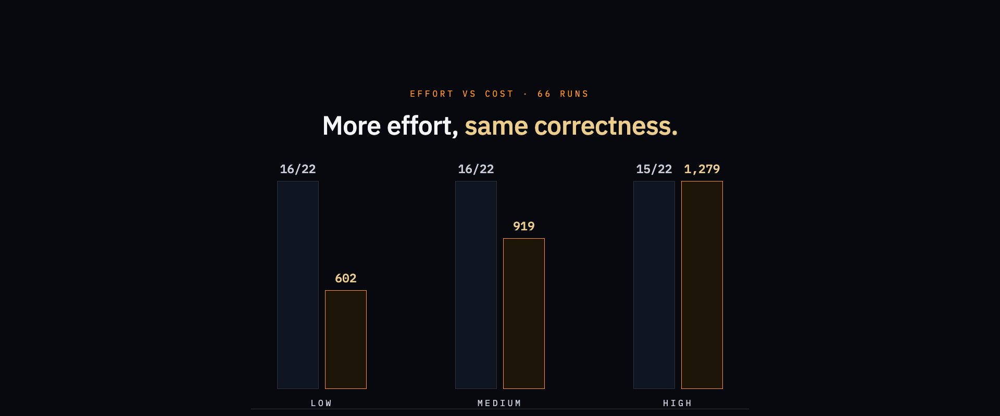
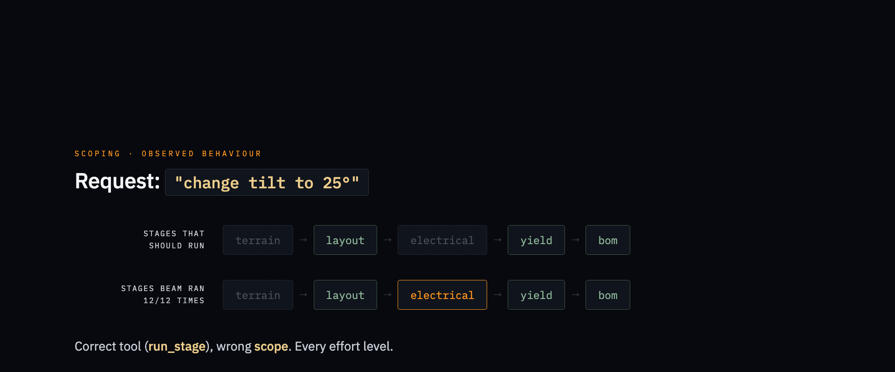

BEAM for BOM is an agentic solar-farm feasibility studio built on Beam, Reflection's 501B-parameter reasoning model, for the Build with Beam challenge. The problem it tackles: first-pass site screening for utility-scale solar still takes weeks of manual GIS work per site, redone every time a constraint changes. You draw a land boundary on a satellite globe and Beam designs the farm end to end: it detects constraints from OpenStreetMap, packs panel tables around them, sizes the electrical kit, estimates generation from PVGIS data, and writes a procurement-ready bill of materials and proposal. A Three.js preview rebuilds the site on real elevation terrain with a time-of-day sun study and a walkable first-person mode, and a conversational layer ("Ask Beam") lets you re-plan the site in plain language while you watch it reason.

├── backend
│ ├── app # FastAPI services: terrain, layout, electrical, yield, BOM, agent
│ └── eval # Agentic eval: tasks.json, run_eval.py, results.csv, ledger.jsonl
├── docs # Architecture + agent-loop + eval diagrams
├── eval # Submission assets: video script, diagrams (HTML), session notes
├── frontend # React + Vite + TypeScript: Cesium MapView, Three.js Scene3D
├── Dockerfile # Single-container build for Hugging Face Spaces
├── LICENSE
└── README.mdTwo 3D surfaces share one data source. A React + Cesium globe is the working map; a Three.js scene is the cinematic preview on real heightfield terrain. A FastAPI backend runs the deterministic engineering services; Beam drives them through a tool-calling loop.
React + CesiumJS frontend (Esri World Imagery, Turf) ← working map
React + Three.js scene (Mapterhorn DEM, draped imagery) ← 3D preview
| REST
FastAPI backend
+-- Terrain service (Open-Meteo/Open-Elevation, slope/aspect mask)
+-- Layout service (Shapely clipping, azimuth-rotated table grid)
+-- Electrical service (strings, inverters, cables, transformer rules)
+-- Yield service (PVGIS via pvlib, hourly -> monthly fallback, cached)
+-- BOM service (deterministic package generation)
+-- Export service (GeoJSON / CSV / Markdown / JSON)
+-- Agent layer (OpenAI-compatible Beam endpoint or scripted fallback)
SQLite project store
Beam-1.0-501B-A23B via
Reflection's OpenAI-compatible endpoint.run_full_design, run_stage,
compare_scenarios, get_site_conditions,
get_design_summary, export_project.reasoning_content
captured per turn and shown in the chat UI, plus latency + token
usage per reply.reasoning_content echoed verbatim on every assistant
tool-call turn — preserved across turns (400 otherwise).backend/eval/ledger.jsonl.Beam is the reasoning layer over a deterministic pipeline; the services compute and Beam decides. Concretely it handles:
run_full_design(land_use_factor=0.8); "change tilt
to 25°" becomes a scoped run_stage call.reasoning_effort low→max
per reply — eval shows low already saturates tool
correctness, so the demo runs cheap by default.11 agentic tasks cover tool selection, pipeline scoping and grounding — 66 runs at three reasoning efforts against the live model:
| effort | tasks passed | avg reasoning tokens | avg completion tokens | avg latency |
|---|---|---|---|---|
| low | 16/22 | 190 | 602 | 5.8 s |
| medium | 16/22 | 449 | 919 | 7.2 s |
| high | 15/22 | 748 | 1,279 | 9.1 s |
Tool selection is nearly perfect at every effort, and
high costs ~2.1× the completion tokens for no extra
correctness.

The observed failure mode is stage scoping: on narrow changes
Beam re-runs the electrical stage every time (12/12).
Wasteful, not wrong.

BEAM_API_BASEPython 3.11+ (uv), Node 18+. No API keys required for
the offline scripted mode; a Reflection Beam endpoint for live mode.
cd backend && uv run uvicorn app.main:app --port 8000
cd frontend && npm install && npm run devThen click Run the demo: an irregular ~10 ha East York site combining a mapped farmland field with its adjoining ~1.12 ha waterbody. This is an illustrative site-boundary assumption; land ownership is not verified. BEAM detects the waterbody and its 5 m buffer (~1.35 ha), nearby roads/woodland, and the adjoining farmstead yard — five mapped buildings in the east-side farmstead pocket, shown as red no-panel areas; Heeling House across the pond remains outside. The 2.5 MWp target produces 248 tables / 5,952 modules for a 2.559 MWp array, ~2,364.5 MWh/yr via PVGIS.
60-second tour: demo → globe fly-in → pipeline → Report → 3D Preview (terrain scene, time-of-day sun study, first-person walk) → Ask Beam "reduce land use by 20%".
Create a Docker Space and push this repo —
Dockerfile builds the frontend and serves it from
FastAPI on port 7860. Set BEAM_API_* as Space secrets.
eval/mirror_session.md)MIT, as found in the LICENSE file.
🏆 Beam Hackathon submission — agentic solar-farm feasibility studio
🔗 huggingface.co/spaces/…
solar · agent · beam · cesium · fastapi · three.js
No releases
Built for the Build with Beam challenge. The problem it tackles: first-pass site screening for utility-scale solar still takes weeks of manual GIS work per site, redone every time a constraint changes.
BEAM for BOM: draw a boundary on a satellite globe. Beam designs the solar farm, estimates the energy, writes the report, lets you walk the site in 3D, and answers questions while you watch it think. We also measured how it thinks.
[SPACE_URL][GITHUB_URL][VIDEO_URL][GITHUB_URL]/tree/main/backend/eval11 tasks covering tool selection, pipeline scoping and grounding. Each ran at three reasoning efforts, 2 runs per cell, against the live model:
| effort | tasks passed | avg reasoning tokens | avg completion tokens | avg latency |
|---|---|---|---|---|
| low | 16/22 | 190 | 602 | 5.8 s |
| medium | 16/22 | 449 | 919 | 7.2 s |
| high | 15/22 | 748 | 1,279 | 9.1 s |
Two things fall out of this. Tool selection is already saturated at low
effort: Beam picks the right tool ~100% of the time at every level, so
paying for high costs 2.1× the output tokens and buys nothing
on correctness. And the failure mode is not choosing tools, it is scoping
them…
Beam is the reasoning layer over the whole product; the deterministic services compute, Beam decides. Three surfaces:
POST /api/chat — a true multi-turn tool-calling loop
with 6 typed tools. Beam maps intent to calls ("reduce land use 20%"
→ land_use_factor=0.8), scopes which stages a change
needs, and narrates grounded answers.POST /api/proposal — Beam writes the proposal narrative
with every number grounded in the design JSON.reasoning_content surfaced per
turn in the chat UI with per-reply tokens and latency;
reasoning_effort low→max selectable live.What the model showed in this workload: near-perfect tool selection at
every effort level, correct intent→args mapping including scoped
run_stage plans, and strict grounding — asked to "just
guess" a number it called a tool in 5 of 6 runs. Its weakest point was
stage scoping, not tool choice.
Mirror (Reflection's agent) added MultiPolygon boundaries, the
/api/proposal surface and shading-derived row pitch. Session
notes are in eval/mirror_session.md and the commits are
verifiable in git.
All LLM calls route through one chokepoint and land in a JSONL ledger: surface, effort, per-call tokens including reasoning, tool calls with args, latency. Total spend is inspectable end to end.